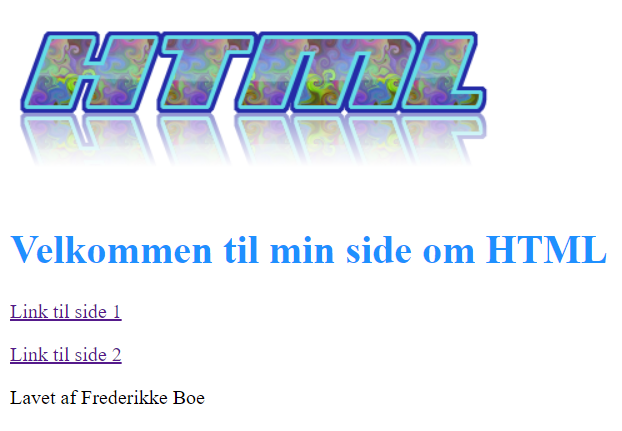

Min første hjemmeside
I vores første projekt skulle være lære om helt basal HTML og server. Opgaven gik ud på at vi skulle lave en forside, hvor vi skulle linke til 2 andre sider, og indholdet skulle være vores viden om HTML generelt, meta-tags og semantiske tags.

Refleksion
Når jeg kigger tilbage på denne side, så er jeg kommet rigtigt langt. Jeg brugte ikke nogen form for styling på siden, og indholdet er også det mest basale jeg fik ud af undervisningen. Jeg kan næsten krumme tæer over hvordan siden ser ud, hvilket nok også noget om hvor langt jeg er kommet siden. Jeg gik fra at have ingen viden om kode, til at kunne lave en helt basal HTML side, og for mig var det et stort skridt - selvom siden idag ikke er noget jeg er stolt af. Denne side gav mig både viden om at kunne kode HTML, at kunne bruge det rigtige sprog og at formulere mig - selvom der var mange nye begreber.